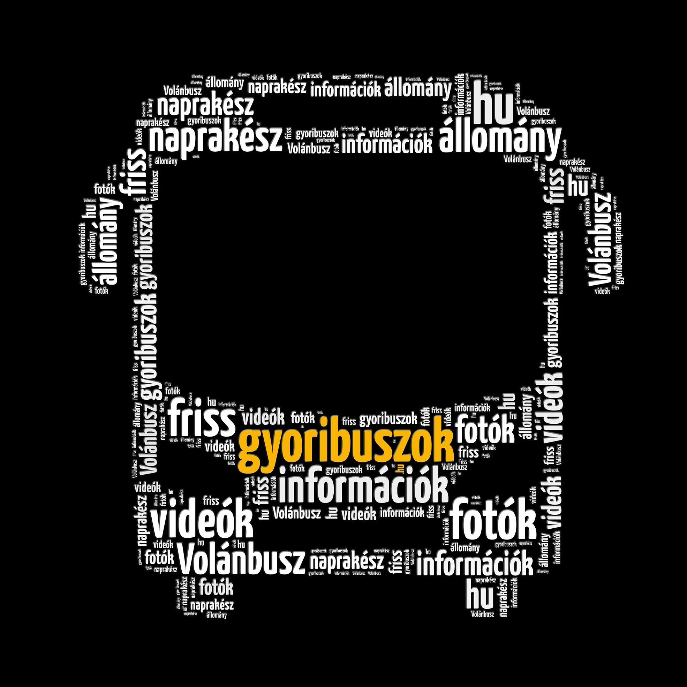

Galéria
Videók
Állományok
Bejelentkezés
Profil
Kijelentkezés
Sopron, helyközi üzemegység
MÁV Személyszállítási Zrt., Győr-Moson-Sopron vármegyei járműállomány
Rendezés típus szerint
Rendezés rendszám szerint
Rendezés évjárat szerint
Típus
Forgalmi rendszám
Évjárat
Galéria